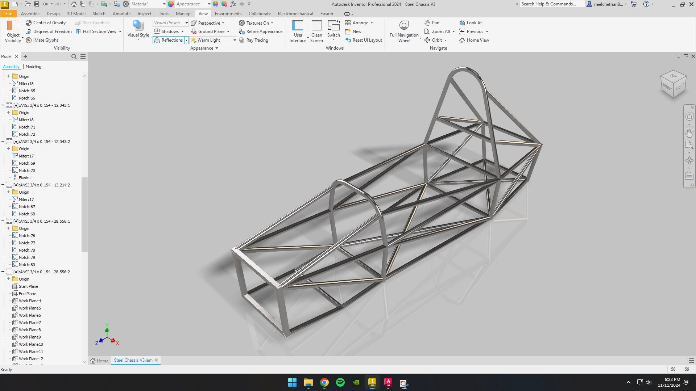

Structures · Formula SAE
FSAE Steel Spaceframe
Chassis Design
Overview
Full-cycle design, procurement, and fabrication of a Formula SAE steel spaceframe chassis as co-founder and President of Phoenix Motorsports. The project ran from initial concept through 11 parametric CAD iterations to a welded physical assembly, closing the complete loop from design file to physical artifact.
Objectives
- Design a structurally sound, rules-compliant steel spaceframe meeting FSAE dimensional, triangulation, and roll hoop requirements.
- Develop a complete bill of materials from the CAD model and independently manage all material procurement.
- Fabricate a fully welded chassis assembly from raw stock through to a structurally complete frame.
My Contributions
- Co-founded Phoenix Motorsports and served as President and Lead Engineer, owning all technical decision-making.
- Modeled the complete chassis geometry in Autodesk Inventor, iterating through 11 parametric versions before committing to fabrication.
- Built the full bill of materials from the CAD model and independently sourced all steel tube stock and hardware.
- Set up fixturing and jigging to hold frame geometry during assembly, then MIG welded all joints on the physical frame.
Methods / Approach
The chassis was modeled parametrically in Autodesk Inventor, with the spaceframe geometry laid out to maximize triangulation for structural efficiency. Design constraints followed FSAE rules: minimum tube sizing, required triangulation zones in the main hoop and front bulkhead areas, and roll hoop geometry. Eleven design iterations refined member routing, joint geometry, and overall proportions before cutting began.
Fabrication involved cutting and fitting steel tubing to the CAD geometry, building a jig to hold members in position, and MIG welding all joints with attention to weld sequence to limit heat distortion across the frame.
Results

- Completed Steel Chassis V3 — a fully welded, structurally assembled spaceframe.
- 11 CAD iterations produced a refined geometry meeting all FSAE structural requirements.
- Complete bill of materials developed from the model and fulfilled through independent procurement.
Challenges and How I Solved Them
Heat distortion during welding. Welding thin-wall tube causes thermal distortion that can pull the frame out of the jig geometry. I managed this by planning the weld sequence to distribute heat input symmetrically across the frame, tacking all joints before running full beads, and checking geometry against the CAD model at each stage.
Building from zero. Phoenix Motorsports was a new program with no prior infrastructure, equipment, or team. Co-founding it meant establishing processes, sourcing tools and workspace, and building a team simultaneously with doing the engineering work. I prioritized getting a working design into fabrication over perfecting the CAD first, which kept the program moving.
What I Learned
- Physical intuition for how loads travel through triangulated structures — where stress concentrates at weld joints and how real fabricated geometry differs from idealized CAD.
- The importance of design-for-fabrication: features that look clean in CAD can be difficult to jig or weld in practice.
- How to close the loop between design and physical reality — the same validation mindset that underlies FEA and simulation work in aerospace.
Tools and Technologies
- Autodesk Inventor — 3D parametric CAD
- Autodesk AutoCAD — 2D drawing and layout
- MIG welding
- Steel tube cutting, fitting, and fixturing
- Bill of materials development and procurement